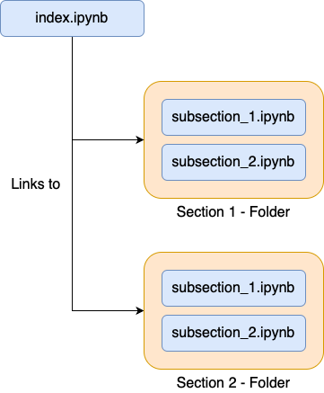

Step by Step - Creating OER with Jupyter, Git …
Jupyter Notebooks
This tutorial assumes that you are familiar with jupyter notebook and its advantages. For an introduction to jupyter notebook please refer to other sites or the official documentation.
{kind=link}
The general structure used in this tutorial is shown on the right. A notebook called index.ipynb provides a table of contents and direct links to the other jupyter notebook representing subsections.
Github - Continuous Integration
We will use GitHub to make our notebooks accessible and findable. GitHub also allowes for convinient revision and authorship tracking and provides tools for collaboration. Users can help revise and refine the materials through GitHubs issue and pull-request mechanisms. You can read more on the basics of GitHub and git here.
TBD…
Interacting with Notebooks
Now that the collection of notebooks is accessible, there are quite a few ways to interact with it.
Local
Cloning the repository and using the materials locally provides the best interactivity to the user, enabling them to execute computational examples in the notebooks, make changes and save those changes. But this also has the highest barrier to entry because of the need of local installations of Jupyter and other packages used.
You can help your users by providing a requirements.txt file or requirements.yml file, that can be used with pip or conda respectivly to install all needed packages or create an environment with them included.
(my)Binder
With binder you can make your notebooks avaible to be interacted within an online environment. You can use mybinder.org to host the notebooks for you with no futher requirements than your already available puplic repository. Binder allows for the notebooks used and executed like you would with a local installation. The only downside is, that you are unable to save your changes.
You can also set up your own binder server, if the ressources provided by mybinder.org are not sufficient. Read more on that in the binder documentation.
nbviewer
The nbviewer service provides static versions of your notebook collection. All you have to do is enter your repository on nbviewer.org and you will get a link to static renderings of your notebooks. This convinient for having a first look at the materials without any prior knowlege of jupyter but it doesn’t allow for any interactivity.
Export with nbsphinx
With nbsphinx, a sphinx extension, you can produce HTML or LaTeX output from your collection of notebooks. Please refer to the nbsphinx installation page to install all necessary packages.
For nbshinx to render the table of contents correctly you need to use the nbsphinx-toctree tag as metadata for the index.ipynb file’s Markdown cells.
You can also use the tag to specify cells that should not be rendered in the final output. You can find more information on this in the nbsphinx documentation.